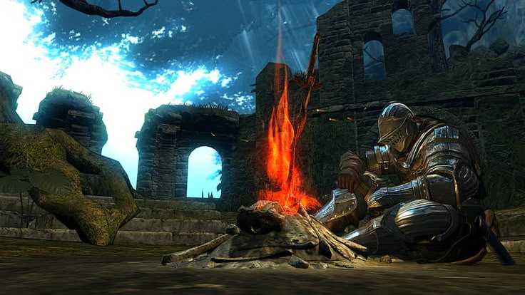
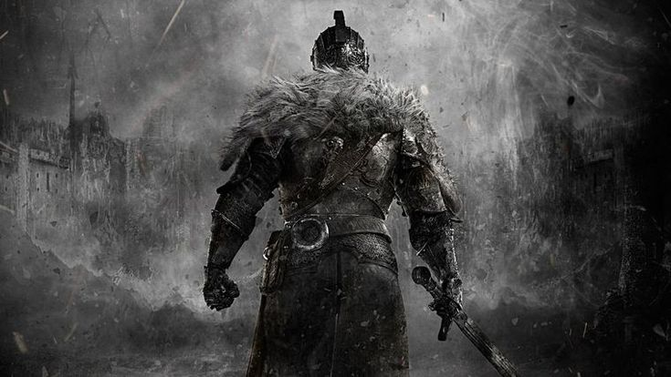
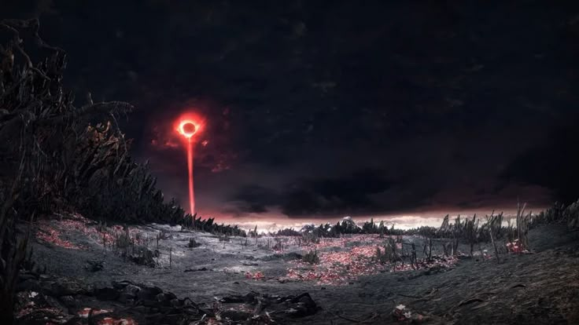
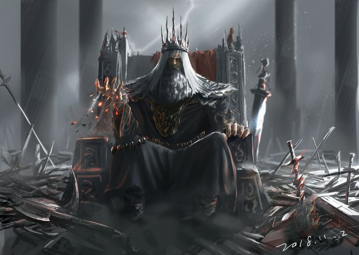
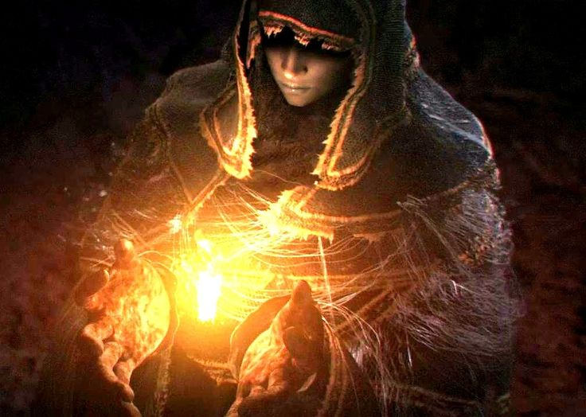

- 
- 
- 
Dark Souls Lore
A Era dos Anciões e o Primeiro Fogo
No início, o mundo era um lugar indistinto, envolto em névoas e governado por dragões imortais e arcáicos. Não havia vida nem morte, apenas uma eternidade cinzenta.
Então, surgiu o Primeiro Fogo, trazendo consigo a disparidade: luz e trevas, vida e morte, calor e frio. Desse fogo, surgiram as Almas dos Lordes, que concederam poder a quatro seres:
- Gwyn, o Senhor da Luz (com a Alma da Luz)
- A Bruxa de Izalith (com a Alma da Vida)